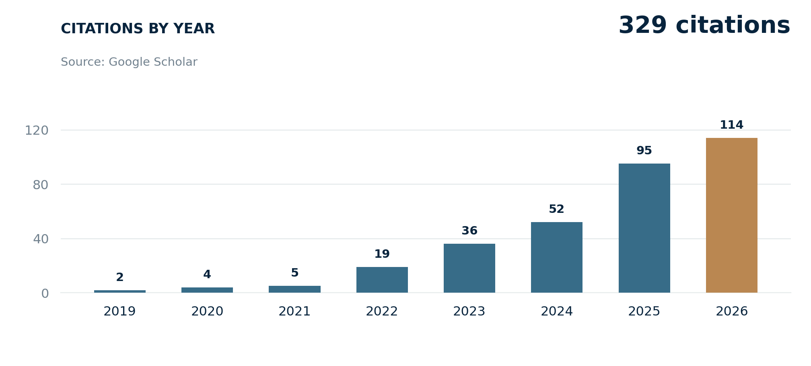

PUBLICATIONS
Publications
Peer-reviewed articles, academic theses and publication metrics.
PUBLICATION RECORD
Articles and theses
BIBLIOMETRICS / JUNE 2026
Research by the numbersAs reported on Google Scholar and the previous version of this website (17 June 2026).
11h-index
24Peer-reviewed articles
14First-author articles

Google Scholar snapshot · 17 June 20262026
Dynamical Implications of the Recently Detected Feature around Quaoar and Constraints on the Presence of Additional Satellites↗Decoding transit variations: disentangling satellites from planets through numerical modulation↗Evidence of a New Arc or a Belt of Small Satellites around (50000) Quaoar↗Do self-gravitating hard-sphere disk simulations form Darwin ellipsoids?↗
2025
Multiple moonlet mergers as the origin of the Dinkinesh-Selam system↗Dynamical Environment and Stability around Centaur (2060) Chiron↗On the formation of satellites in dense solid-particle disks↗Hydrodynamical simulations of proto-Moon degassing↗Pollution resistance of Saturn’s ring particles during micrometeoroid impact↗
2024
Rapid formation of binary asteroid systems post rotational failure: A recipe for making atypically shaped satellites↗Long-term dust dynamics in the Didymos and Dimorphos system: Production, stability, and transport.↗Revisiting Dimorphos formation: A pyramidal regime perspective and application to Dinkinesh’s satellite↗
2023
2022
Numerical analysis of processes for the formation of moonlets confining the arcs of Neptune↗Challenges in Forming Phobos and Deimos Directly from a Splitting of an Ancestral Single Moon↗Dynamics around non-spherical symmetric bodies–I. The case of a spherical body with mass anomaly↗Long-term dynamical evolution of Pallene (Saturn XXXIII) and its diffuse, dusty ring↗
2021
2020
2018
Further publications
Exploring models of formation and dynamic evolution of satellites and rings of the solar system↗Estudo da evolução orbital de partículas em ressonância de corrotação e Lindblad e sob influência de satélites coorbitais: aplicação aos arcos planetários↗Dinâmica de partículas micrométricas no arco do anel G de Saturno↗